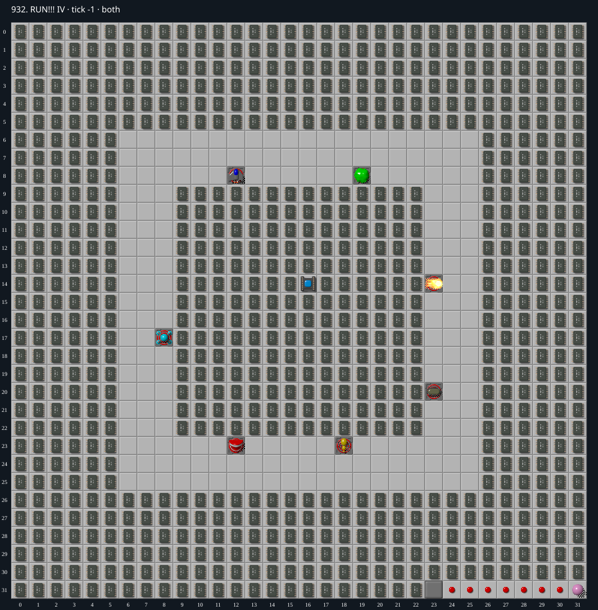

Jacques · Original Tile World MS
932. RUN!!! IV
Under investigationUnresolved. A corrected MS route has collected 959 of the required 999 chips and matches native C at every recorded step. The final 40-chip route is still being constructed.
999 chips required · 999 second time limit
This is an incomplete investigation. An unsuccessful attempt or bounded search is not evidence that a level is impossible.
Findings so far
- MS supplies a default player at (0,0) despite the missing Chip tile. The surrounding chips initially separate the outer shell from the central monster moat.
- A TypeScript candidate reached 892 collected chips, but its encoded replay dies in the native C engine at tick 2948. That candidate is not a valid MS solution.
- The first native/TypeScript divergence occurs at tick 16: a Teeth at (12,23) attempts to move east into Empty over CloneMachine at (13,23). Native rejects the move; TypeScript permits it. The random states and selected eastward direction agree.
- A reduced board reproduces the discrepancy without cloning or randomness. The correction uses the existing MS catalog entry policy and passes the reduced regression, preserves bowling-ball and Pet Carrier cloner behavior, and matches the entire original 2949-step native trace. That original route now correctly fails in both engines; it remains unsuitable as a solution.
Inspect both layers
The main map shows the initial runtime state. Switch to the buried layer to inspect hidden terrain and items. Hover coordinates are also available in the downloadable SVG.


Recorded checks and attempts
- data audit: Decoded both 1024-cell DAT planes and exact level metadata; initialized production MS runtime and rendered actual game sprites.
- bounded constructive route attempt: Unverified TypeScript-only observation, superseded by the native mismatch below. 167 chips collected by tick 667;832 remain. Stopped at (24,5) after all five local four-tick movement/wait choices were lethal. This does not establish impossibility.
- protected collection prefix: Unverified TypeScript-only observation, superseded by the native mismatch below. TypeScript runtime: 668 chips collected, 331 required chips remaining, alive at (2,17), tick 2931. The runtime listed 196 creatures in total, including Chip and the ball outside the moat; 194 were in the moat. Exact inputs are preserved in 932-shell-probe.json.
- blob timing portal: Unverified TypeScript-only observation, superseded by the native mismatch below. Entering (5,17) at tick 2940 dies at 2944. Waiting four ticks, entering at 2944 and retreating at 2948 survives; the saved prefix reaches (1,17) at tick 2963 with 330 chips required. This is not a complete replay and has not yet received native certification.
- native validation and reduced regression: Encoded TypeScript replay matches manual simulation for the first 400 ticks. Native differs first at tick 16, then the candidate dies at tick 2948. Reduced native probe at tick 8 retains Teeth at (5,5), while the TypeScript regression fails with Teeth at (6,5).
- buried-cloner correction verification: The reduced engine test failed before the correction and passed afterward. All 269 tests across six nearby engine/catalog/controller suites passed. MS typecheck passed. Initial state, all 2949 steps, and result of the original replay match native with no differences, empty stderr, and identical replay bytes.
- corrected outer and core route: After collecting the protected outer shell and most outer boundary chips, Chip enters the core through (9,16). Retained chips at (10,15), (10,17), and (11,16) isolate the entry corridor while the rest of the interior is collected. Native and TypeScript agree on the initial state, all 4404 steps, and the result: alive at (11,15), tick 4403, with 40 chips required. Native stderr is empty and replay bytes are identical.
Scope and limitations
- No winning replay or universal impossibility proof has been established.
- The earlier candidate that relied on the buried-cloner mismatch is invalid. The new 959-chip prefix has complete native trace parity, but no winning completion has yet been produced.
Evidence
- Structured report
- 932-buried-cloner-native.json
- 932-buried-cloner.dat
- 932-core-corrected-partial-parity.json
- 932-outer-partial-parity.json
- 932-regression-parity.json
- web/src/ruleset-ms/impl/builtinLevelRegistration.ts
- legacy_c/mslogic.c:1597
- legacy_c/mslogic.c:1829
- web/src/ruleset-ms/impl/chipMovement.ts:104
- legacy_c/mslogic.c:2277